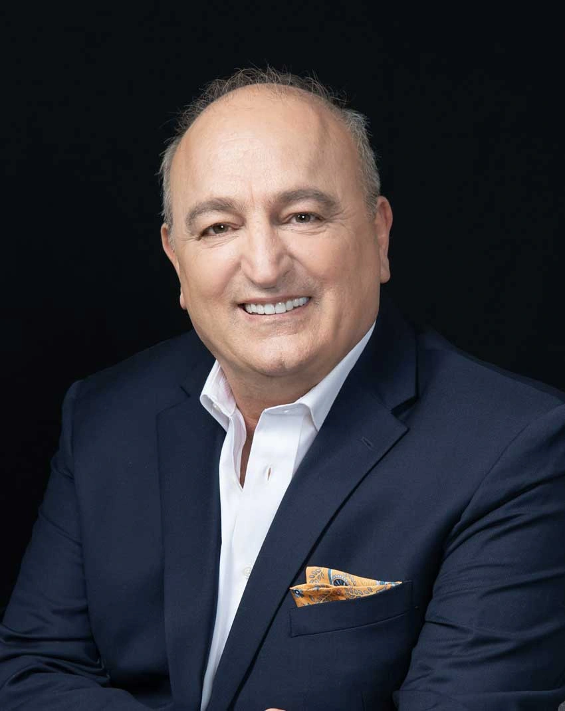

Crowding or spacing
Show the areas you want to change and explain whether food trapping or cleaning is a concern.
Doctor-supervised clear aligners · Vienna, Virginia
We offer Invisalign clear aligners at Farhoumand Dentistry in Vienna. Dr. Foad evaluates your bite, oral health, and alignment goals before discussing whether Invisalign or another orthodontic option fits your plan.
Regular office hours are Monday–Friday, 9:00 AM–5:00 PM. Request an Invisalign consultation online or call the Vienna office to discuss scheduling.
What Invisalign is
Invisalign aligners are removable appliances made for a planned sequence of tooth movements. The evaluation comes first because alignment goals, existing dental work, gum health, and bite relationships can change which approach is appropriate.
Show the areas you want to change and explain whether food trapping or cleaning is a concern.
Describe where your teeth meet unevenly or where the bite feels different from what you expect.
Bring details about braces, aligners, retainers, or tooth movement that has changed over time.
Ask about wear, cleaning, meals, appointments, attachments, refinements, and retention before deciding.
Compare the responsibility, not just the appearance
Neither option is automatically better. The useful comparison is how each system fits the movements required, the way you will manage it each day, and the monitoring your plan needs.
For the broader treatment category, visit Orthodontics in Vienna.
From records to retention
The exact sequence and timing depend on the examination and approved treatment plan. These stages show the decisions that usually need to happen—not a promised schedule.
Discuss what you want to change while the dentist reviews oral health and bite relationships.
When appropriate, records may include photos and scans that document current alignment.
Review the proposed movements, possible attachments or other steps, alternatives, responsibilities, and estimate.
Learn how to wear, remove, clean, store, and change aligners according to your plan.
Scheduled reviews help the dentist compare progress with the plan and decide whether changes or refinements are needed.
After active treatment, a retainer plan helps manage the position reached. Follow-up and replacement needs vary.
Read about retainers after orthodontic treatment.
Your Invisalign consultation in Vienna
Hours: Monday–Friday, 9:00 AM–5:00 PM
Phone:
(703) 636-2442
The office is in Suite 920, with onsite parking and a free parking lot. The client record also lists wheelchair-accessible parking, entrance, and restroom access.
Tysons is a nearby service area, not a second office. Use the verified map for the most useful route to the Vienna address.
Open DirectionsCost and access
Invisalign cost can change with the records required, treatment complexity, planned appointments, refinements, and retainers. The office can explain the estimate after the evaluation.
The practice works with Traditional, PPO, and Medicare Advantage plan types. Participation and orthodontic benefits are plan-specific, so verify both before treatment. HMO and Medicaid plans are not accepted.
Payment methods include cash, personal check, major cards, and debit. CareCredit and Cherry Financing are listed options; terms and eligibility depend on the provider.
The practice lists an in-house dental membership option. Ask the team for current eligibility, pricing, and whether it applies to the care being discussed.
Review the practice's current insurance and financing information.

Your provider
General and Cosmetic Dentist
Dr. Foad Farhoumand's public biography identifies bite alignment as a particular clinical interest and says he uses Invisalign and clear-aligner therapy among the treatment options he discusses for alignment concerns.
For this page, that experience is paired with the practice's verified use of iTero intraoral imaging. Neither the scan nor the software replaces the examination and clinical plan.
Meet Dr. FoadI love this dentist’s office! Dr. Foad is so thorough and so kind. He really cares about his patients and has worked with me for all of my concerns, TMJ, bite alignment, and a full smile. Deesha placed my Invisalign buttons and she was a gem, so gentle, walked me through everything and made me so comfortable. I almost fell asleep in her chair. They are the best and I’m so grateful I found them!
Focused questions
Attachments or other treatment steps may be recommended when they support the planned movements. Dr. Foad can explain what your plan calls for after reviewing your records.
Call the office before moving ahead on your own. The next instruction can depend on where you are in the sequence and how the aligner fits.
Timing varies with the movements needed, response to treatment, daily wear, scheduled reviews, and whether refinements are appropriate. Your plan should provide the useful estimate.
Retention is normally part of the orthodontic conversation because teeth can move after active treatment. The type, wear schedule, and replacement plan should be reviewed for your case.
Choose your next step
Call the Vienna office or use the appointment request form.